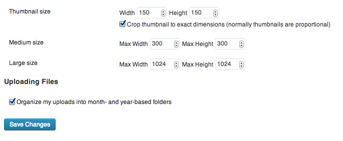
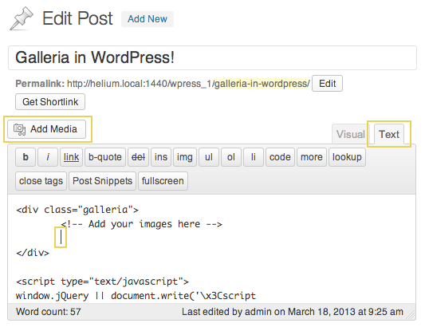

Galleria in WordPress
This is the easiest possible way to add Galleria to a single post. We used WordPress 3.5.1, but the process should be fairly similar in earlier versions.
1. Check your media settings
The default WordPress media settings are not optimal for Galleria. The medium size images are a bit too small at 300px, and the large size images, at 1024px, are a bit bigger than our recommendation. If you choose to keep these settings, adding your images as “medium” will give you a faster, more responsive Galleria, but it will suffer visually. If you add your images as “large”, it will look great, but it will probably feel a bit sluggish, especially as the amount of images grows.
If you are in a position where you can change these settings without impairing the rest of your site, we suggest you set the max width/height of your large images to 800px. If you are not sure, do not change the settings. It’s entirely possible for a WordPress theme designer to edit these settings, and your theme might depend on them to not break.
If you have already changed these settings to suit your other needs, find the image size that is closest to 800px.
Note: If you are using Galleria with a theme that supports fullscreen, Galleria will automatically use the original file for full screen mode if you use the correct settings when adding the image. More on that below.
2. Download and install the latest Galleria
If you are using this method with our free theme, you don’t need to change anything in the script. You can safely skip to the next step, 3. Create the post.
Start your FTP application, connect to your WordPress host, and browse to the
wp-contentfolder.The zip file should contain a folder named after your theme. In it you will find one folder,
galleriaanddemo.html. Upload these three to thewp_contentfolder. If you see a file named.DS_Store, ignore it.To try out your Galleria installation, go to www.yourwpdomain.com/wp-content/demo.html. If it doesn’t work, make sure the path is correct. If you found your
wp-contentfolder at/public_html/wp/wp-content, change your url accordingly: www.yourdomain.com/wp/wp-content/demo.html. If that doesn’t work either, go to Settings > General and find the field “WordPress Address (URL)”. Copy that and paste it in your browser address bar, then add/wp-content/demo.htmlto the end of it.Once you have established that Galleria works as expected, you can safely remove the
readme.htmlanddemo.htmlfiles to avoid cluttering yourwp-contentfolder.
If you’re not used to working through FTP, steps 4 and 5 might have thrown you off. Don’t worry, it’s not very hard. Start by checking the support section of your hosting company web site, they probably have a guide on how to set up an FTP application and use it.
3. Create the post
Create a new post, a new page or a new custom post and enter the “Text” (formerly “HTML”) edit mode as opposed to the “Visual” mode. You do this by clicking the appropriate tab on top of the editor, far right.
Copy the code below and paste it into your WordPress editor:
<div class="galleria">
<!-- Add your images here -->
</div>
<script type="text/javascript">
window.jQuery || document.write('\x3Cscript src="//ajax.googleapis.com/ajax/libs/jquery/1.9.1/jquery.min.js">\x3C/script>');
</script>
<script type="text/javascript" src="//cdnjs.cloudflare.com/ajax/libs/galleria/1.3.6/galleria.min.js"></script>
<script type="text/javascript" src="//cdnjs.cloudflare.com/ajax/libs/galleria/1.3.6/themes/classic/galleria.classic.min.js"></script>
<script type="text/javascript">
Galleria.run('.galleria', {
height: 0.5625,
/*
* This is a good place to add other options,
* like transition: 'fade',
* or autoplay: true,
* but don't forget the comma at the end.
*/
dataConfig: function(image) {
return { image: jQuery(image).attr('src'), big: jQuery(image).parent().attr('href') };
}
});
</script>
Place your caret at the end of the line <!-- Add your images here --> and press enter. Do the following for each image you want to add to Galleria:
Click the “Add media” button.
- Upload or find your image, and make sure it’s selected. The image should get a blue border, and the right panel should display the attachment details. That’s where we need to make a few changes:
Add a title and/or an alt text. Galleria will display both of these in the info box, with the title as header and the alt text as body.
Select “Media File” in the drop-down named “Link To”. This way,
Galleria can find the original images if your theme supports fullscreen.
In the drop-down named “Size”, select an image size as discussed in 1. Check your media settings. Recommended settings depend on the orientation of your image. For a landscape image, find the size with a width close to 800px. For a portrait image, the height can be anything between 400px and 800px and it will look nice.
Click the “Insert into post” button.
When you’re done adding images, find the line that reads:
<script type="text/javascript" src="//cdnjs.cloudflare.com/ajax/libs/galleria/1.2.9/themes/classic/galleria.classic.min.js"></script>
and change the path in the src attribute to point to your uploaded theme file, e.g:
<script type="text/javascript" src="/wp-content/galleria/themes/[your theme name]/galleria.[your theme name again].min.js"></script>
If you don’t want to use the CDN for the core Galleria file, you can change that line accordingly.
Note: The paths to the script files are relative to your domain. That means, if the address to your WordPress site is http://mywebsite.com/blog/, then the path to the scripts should be /blog/wp-content/galleria/.
4. You’re done!
It’s time to preview your post. If you have followed the above instructions, you should see an instance of Galleria when you click the “Preview” button. If not, check out the Troubleshooting guide below.
(5. Pour some sugar on it.)
The above script is all you need to turn your post into an amazing image gallery, and a good starting point. But if you’re feeling adventurous once you get it working, there are tons of options you can use to customize your Galleria. The Galleria Docs has a whole section of standard options that you can use for all themes. You can find it here ../options/. There are also theme specific options for localization and feature toggling.
Troubleshooting
If you are experiencing strange behavior or fail to see the Galleria at all, here’s a few pointers. These only apply to the above method of adding Galleria to WordPress. For general Galleria errors, check out the Galleria docs on errors Galleria error messages.
Some of the solutions below asks you to check the JavaScript console. If you don’t know how to open the console on your browser, please refer to this post on StackExchange.
All I see is a row of images.
Check the JavaScript console. If it reads something like Galleria is not defined, it means that the Galleria script is not loaded. The above script by default tries to load Galleria from CDNJS. There is no fallback if the server is down. If you have uploaded the Galleria code to your own server, change the paths accordingly and refresh the page.
Another possible reason is that you added your images outside of the <div class=”galleria”></div> tag. Galleria can only find images inside of that tag, so cut and paste your image mark-up inside and you’ll be fine.
I see no images at all. One possible reason for this is that the Galleria core script is loaded, but not the theme code. The above script by default loads the free Classic theme from the same CDN as the core, so if one is loaded, the other most likely is as well. However, if you are using this methods, make sure the path to the script is valid and points to the folder you placed the theme in on your server. You should get an error in the JavaScript console if the theme file didn’t load.
When all else fails. You might be using an incompatible jQuery version. Our script checks if jQuery is loaded, and only loads version 1.9.1 from the Google CDN if it isn’t. If you are using an extremely old WordPress theme, and that theme uses jQuery, there is a chance that it’s using a version that’s not compatible with Galleria. Honestly, we don’t know what version that could be, and we couldn’t reproduce this problem, but it’s possible.
Why is one of my images a smiley? Ok, so this is pretty far fetched, but since it happened to us, we thought we’d add it here. If you have enabled “Convert emoticons like :-) and :-P to graphics on display” under Settings > Writing, and you add a smiley in the caption field of an image, this gets turned into a graphic by WordPress, and consequently picked up by Galleria. Change your settings or remove the smiley from the caption and you’ll be fine. Also, Galleria has no use for the text in the caption field, so if you’re not intent on degrading super gracefully for non-JavaScript browsers, your best choice is to leave that field empty.